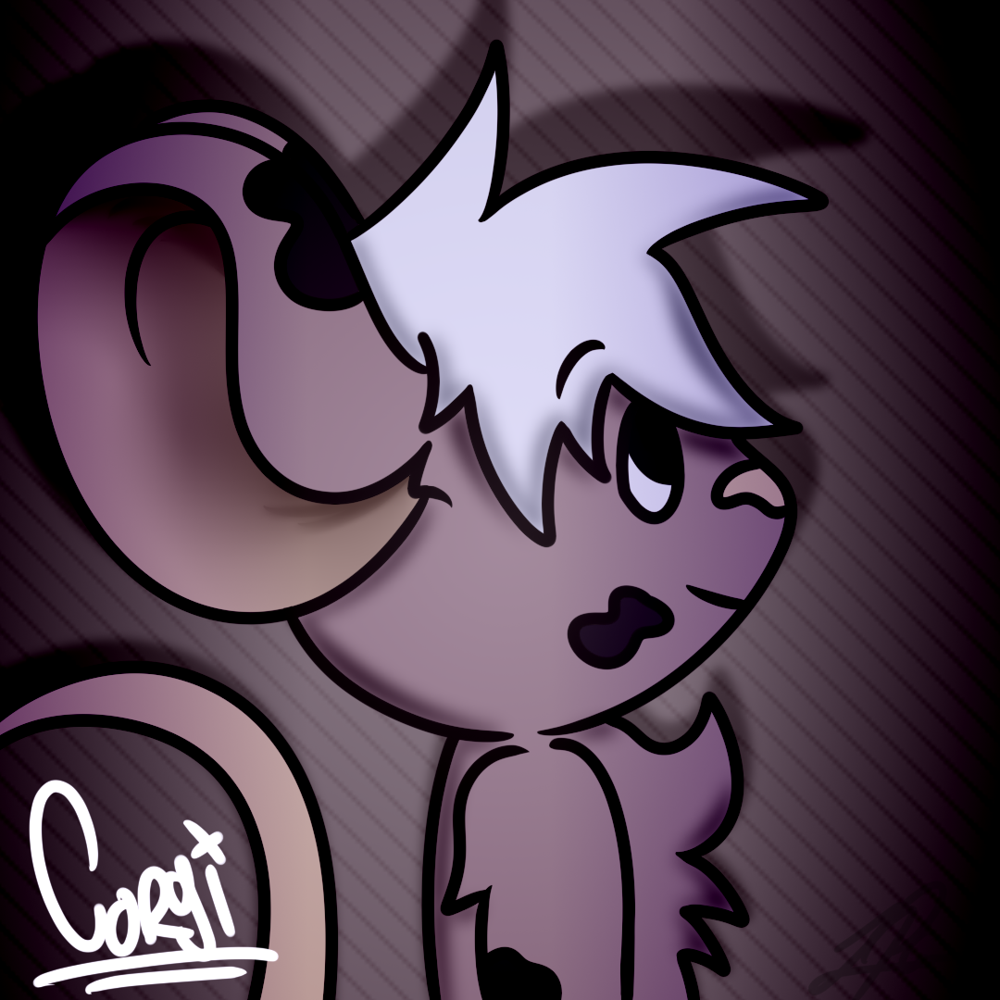

CorgiTheMouse
Colombian programmer and content creator. Artist, interested in the technological world, both in the
creation of mobile and desktop applications and Bots for social networks. In addition to having an
application approved by the social network called "Discord".
I am also a YouTuber who teaches drawing videos, Javascript tutorials or playing something.
Willing to take on any challenge to expand my area of learning and improve as a person to influence
new generations.
Currently interested in repair, preventive and corrective maintenance of computer equipment and
improvements for personal computer equipment, giving them a new life or a new use. Includes
improvements such as increased memory, added new hardware.